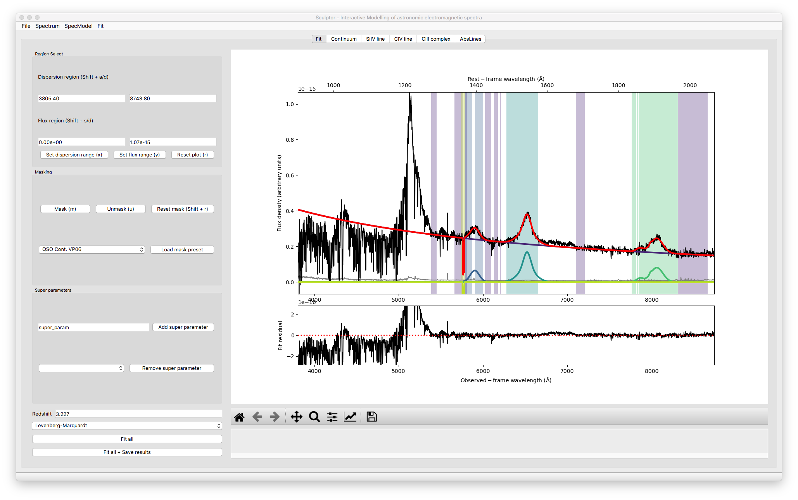

Welcome to Sculptor’s documentation!¶
Version: 0.4b0
Sculptor is a high level API and Graphical User Interface around LMFIT tailored specifically for the analysis of astronomical spectra. This package is designed to facilitate reproducible scientific results and easy to inspect model fits in an open source framework. For this purpose the Sculptor package introduces four core python modules and a Graphical User Interface for interactive control:
1. SpecOneD: The SpecOneD module introduces the SpecOneD class, which is designed to store and manipulate 1D astronomical spectral data.
2. SpecFit: The core module of Sculptor introducing the SpecFit class, which holds complex models to fit to the 1D astronomical spectrum.
3. SpecModel: A helper class, which holds one complex spectral model, which can consist of multiple pre-defined or user-defined model functions to be fit to the 1D spectrum.
4. SpecAnalysis: A module focused on the analysis of continuum models of models of emission/absorption features. It interfaces with the SpecFit class and streamlines the process of analyzing the fitted spectral models.
{kind=link}
At the heart of the Sculptor package is the Graphical User Interface, which offers interactive control to set up and combine multiple spectral models to fully fit the astronomical spectrum of choice. This includes masking of spectral features, defining fit regions, and setting of fit parameter boundaries. The framework allows to add interdependent fit parameters (e.g., to couple the FWHM of multiple emission/absorption lines).
If you are interested in being involved with this project, please contact Jan-Torge Schindler via github.
Disclaimer: This project is currently undergoing rapid development. Be advised as the API has not been finalized, yet, fits done with the current version may not work with a future version of the software. The first stable, well-tested release will be version 1.0.0 anticipated for summer 2021.
Getting Started:
Tutorials:
- An introduction to the SpecOneD class
- The PassBand class
- Preparing a composite spectrum for Sculptor modeling using the SpecOneD class
- Scripting Sculptor 01 - Modelling the example spectrum in a script
- Scripting Sculptor 02 - Analysing model fits with SpecAnalysis
- Scripting Sculptor 03 - Fitting and Analzying models using MCMC
Module documentation:
Extensions:
License: